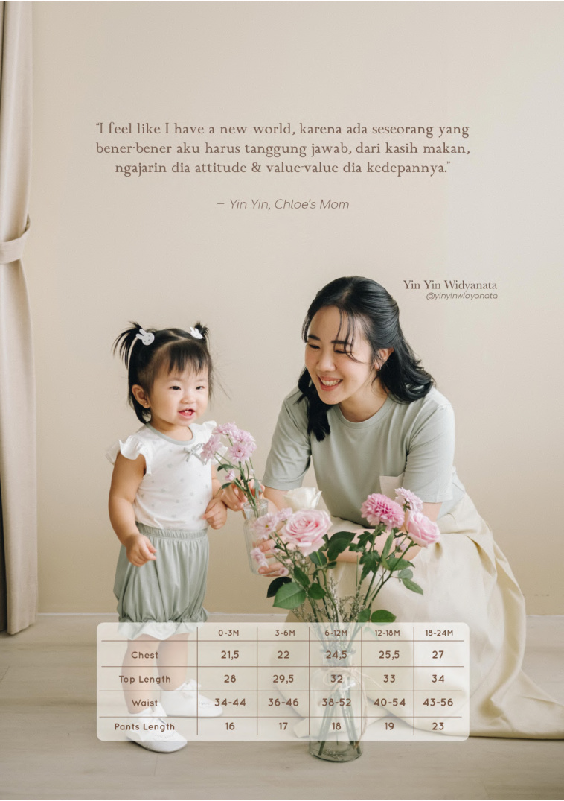
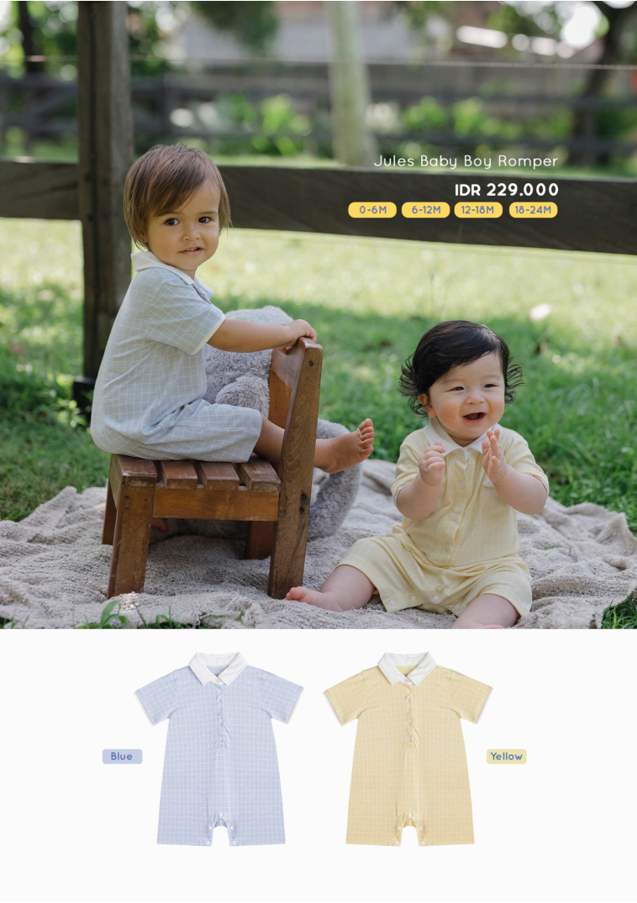
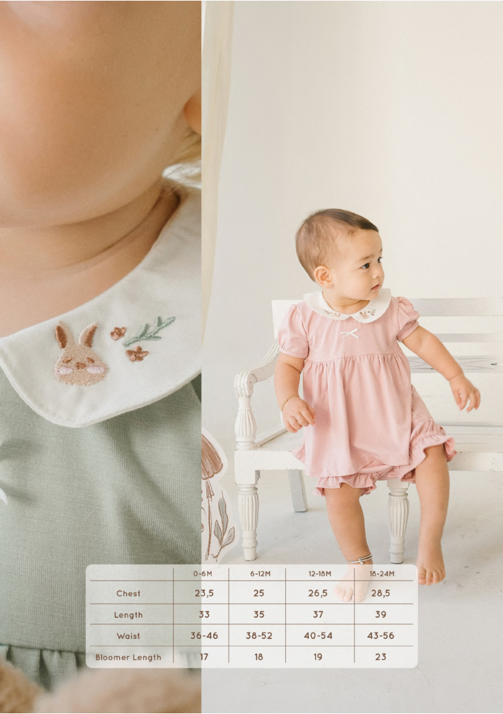

A home for organic clothing that grows with the family — gentle, considered, and made to be loved.

azizsaifmomsworld began as a quiet search — for clothes soft enough for a newborn, beautiful enough to keep, and made by people we could meet.
Today we curate a small family of like-minded ateliers — beginning with Awan & Co — bringing organic kids and family essentials to the GCC under one trusted address.

Organic cotton and TENCEL™ that breathe. Low-impact dyes that don't leach. Hand-finished seams that don't itch. OEKO-TEX certified, every piece, every time.
We don't chase trends — we make pieces a baby can wear, then a younger sibling can wear, then can be passed on with love.